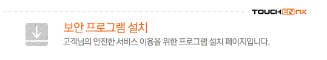

TouchEn 보안 프로그램 설치
- ≫ 하단의 버튼을 눌러 프로그램을 다운로드 받아 설치 하시기 바랍니다.
- ≫ 수동설치후에 반드시 [새로고침] 을 하거나 해당사이트로 재 접속하여주시기 바랍니다.
- ≫ 접속PC정보:

- 설치완료 후 장시간 화면이 멈춰있거나 설치가 반복될경우 다음을 확인하시기 바랍니다.
(1) 정상적인 설치/동작확인을 위하여 접속확인을 선택하여 정상적으로 접속되는지 확인합니다. - 설치가 정상적으로 되지 않는 경우에는 사용중인 브라우저를 모두 종료한뒤 [제어판]의 [프로그램 추가제거]에서 [TouchEn nxKey with E2E for 32(64)Bit]삭제 후에 수동설치 파일로 재 설치후 이용하십시오.
- 보안 프로그램 설치안내: [설치안내바로가기]